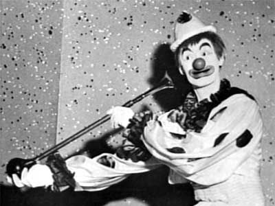
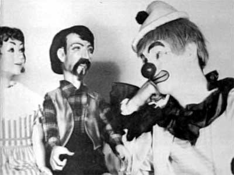
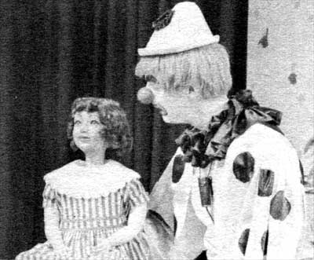

Hour-long
weekend
children's
program
featuring
"Rusty
the
Clown."
|  |
| Rusty
might
not
have
blown
his
own
horn,
but
he
did
honk
it! |
Who is Rusty the Clown?
Having
luncheon
at
Bart's,
I
was
introduced
to
"Rusty"
the
Clown.
But
this
wasn't
Rusty,
this
was
Jim
Allen.
I
had
seen
pictures
of
both,
and
seen
both
in
person,
though
at
a
distance.
Jim
didn't
make
me
laugh,
Jim
didn't
wear
floppy
shoes,
a
big
red
nose
and
clown
costume.
Rusty
did.
And
Rusty
acted
like
a
clown.
Jim
sat
quietly
at
one
corner
of
the
table
and
said
very
little;
he
didn't
do
any
clowning.
I
made
a
date
to
talk
with
Jim
Allen
at
home
the
next
Sunday.
I
had
to
be
convinced.
That
Saturday
I
watched
“Rusty’s
Hour”
from
4:00
to
5:00
on
KPTV.
This
was
Rusty.
He
did
all
the
things
that
a
clown
is
supposed
to
do.
The
kids
on
the
show
knew
it
was
Rusty--you
could
see
that.
I
had
a
picture
of
Jim,
and
kept
looking
at
it
saying,
"This
is
Rusty
.
.
.
this
is
Rusty!"
But
I
still
wasn't
able
to
co-ordinate
the
two.
Sunday,
Georgia
met
me
at
the
door.
To
put
myself
at
ease
and
maybe
catch
Jim
off-guard,
so
that
he
would
act
like
Rusty,
I
started
asking
questions
about
the
baby
(3-months-old
Jody
Darlene).
"She's
clowning
in
her
own
right,"
said
Jim.
"She
pays
no
attention
to
me.
Makeup
or
no,
it
makes
no
difference
to
her...
she's
the
star."
Then
he
started
telling
how
she
affects
his
role
as
Rusty.
After
B.
Mike
had
run
a
bit
on
the
baby
in
the
Oregonian,
requests
came
to
see
Jody
on
the
TV
show.
After
that
a
grandmother
wrote
asking
if
"Rusty"—Jim--couldn't
help
her
grandson;
he
was
7
and
afraid
of
Santa
Claus,
clowns
and
all
the
rest.
But
the
boy
adored
the
baby.
So
Jim
had
him
up
on
the
program,
and
by
the
time
the
boy
left
he
and
"Rusty"
were
buddies.
Other
incidents
followed.
Now
Jody,
though
not
seen
on-camera,
is
an
icebreaker
and
a
draw
for
all
age
groups.
|  |
| Rusty
converses
with
his
puppet
friends. |
What
are
children's
reaction
to
"Rusty"
I
asked.
Well,
they
wonder
where
he
comes
from,
is
he
real,
can
they
touch
him
and
he
won't
disappear.
He
is
the
reality
of
a
fantasy,
and
this
is
almost
unbelievable.
They
identify
him
so
completely
with
themselves
that
they
guess
his
age
at
around
11,
12,
14-years
old.
But
if
they
see
him
without
his
get-up
they
won't
believe
it
if
told
that
he
is
Rusty.
He
must
always
be
"in
character"
in
every
way
with
children
around.
Those
who
do
know
him
in
his
general
neighborhood,
will
gather
to
watch
him
mow
his
lawn,
and
he
must
be
"Rusty"
while
doing
it,
even
if
not
in
costume.
He
is
"Rusty"
24
hours
a
day,
six
days
a
week.
(The
seventh
day,
Sunday,
Georgia
insists
is
family
day
when
Jim
cares
for
and
feeds
the
baby.)
He
makes
personal
appearances
in
Oregon
and
Washington--in
full
regalia--and
has
another
program
in
Pasco,
Washington.
He
has
found
these
very
important--to
him
and
to
the
children.
Children
come
up
to
him,
and
in
a
very
earnest,
confidential
tone
will
tell
him
"I
see
you
on
television,"
as
though
it
were
something
new
and
it
was
important
to
let
him
know.
Because
of
these
appearances
and
the
show
he
gets
about
40
letters
a
day--all
of
which
he
and
Georgia
answer.
A
file
is
kept
of
all
these
letters
and
answers.
|  |
| Rusty
and
"Vicky"
speak
as
one. |
Adult
reaction
to
Rusty
is
divided.
The
single
or
aging
group
whose
children
have
gone
beyond
the
"clown"
stage
find
him
too
"childish."
But
the
mothers
of
youngsters
find
such
things
as
the
children's
fairytales
before
bedtime,
wonderful.
And
they
demand
the
highest
caliber
of
entertainment
of
a
positive
kind;
when
a
program
visitor
initiated
a
little
bit
of
horseplay--he
pulled
out
a
water
pistol
and
shot
"Rusty"
in
the
face--Jim
received
vigorous
complaints.
The
parents
wanted
no
semblance
of
shoot-'em-ups
in
a
distinctly
child's
program.
So
Jim
always
attempts
to
live
by
a
code
more
stringent
than
even
the
TV
code.
The
most
frequent
remark
folks
address
to
Rusty-Jim?
"We
see
your
program.
We
like
it
very
much,
very
much…
a
nice
hobby.
Now,
what
do
you
do
for
a
living?"
Article
from
TV
Prevue
Magazine,
November
23,
1958